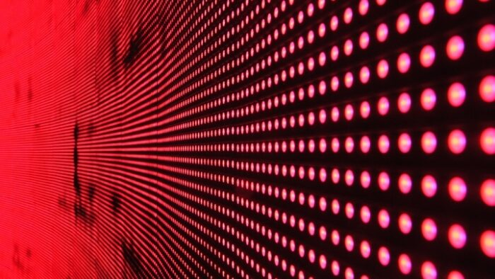
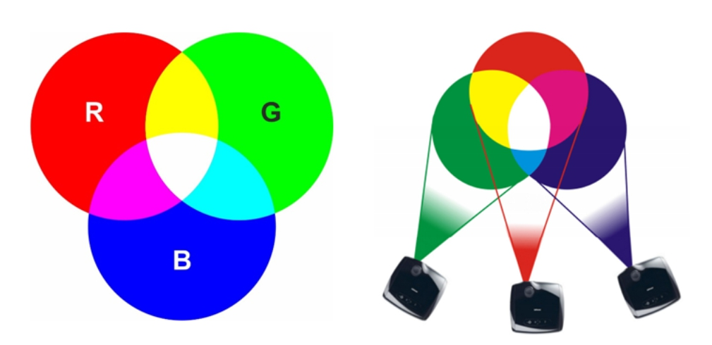
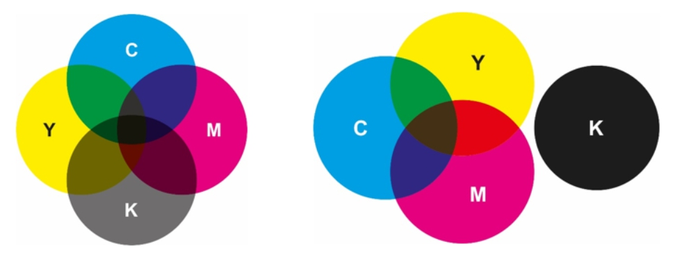

Como Funcionam os Pixels
Cada pixel contém subpixels de vermelho, verde e azul. Alterando a intensidade de cada cor, diferentes tons são exibidos na tela.
Os pixels nas telas contêm subpixels de vermelho, verde e azul, que se combinam para formar diversas cores.
A variação da intensidade de cada um desses subpixels determina a cor final percebida pelo olho humano.
Modelo Aditivo (RGB)
O modelo RGB é usado para telas, combinando vermelho, verde e azul para criar cores.
O modelo aditivo RGB (Red, Green, Blue) é utilizado em telas de dispositivos eletrônicos.
cores são formadas pela combinação de diferentes intensidades de luz dessas três cores primárias.
Quanto maior a intensidade, mais clara a cor resultante.
Quando todas as cores estão no máximo, obtemos branco; quando todas estão no mínimo, obtemos preto.
Modelo Subtrativo (CMYK)
O modelo CMYK é utilizado na impressão, misturando ciano, magenta, amarelo e preto.
O modelo subtrativo CMYK (Ciano, Magenta, Amarelo e Preto) é utilizado em impressão.
Diferente do RGB, que adiciona luz, o CMYK funciona removendo luz refletida.
A mistura de ciano, magenta e amarelo deveria, teoricamente, formar preto, mas como na prática isso resulta em um marrom escuro, o preto (K) é adicionado para melhorar o contraste e reduzir o uso de tinta colorida.
Comparação RGB x CMYK
RGB é ideal para telas, pois emite luz, enquanto CMYK é usado para impressão, pois reflete luz.
Enquanto o RGB é usado para telas devido à sua base luminosa, o CMYK é usado para impressões, pois trabalha com a absorção da luz refletida pelo papel.
A conversão de cores entre esses modelos pode causar variações devido às diferenças na forma como as cores são geradas.
| RGB | CMYK |
|---|---|
| Usado em telas digitais | Usado em impressão |
| Combina luzes para formar cores | Mistura pigmentos para formar cores |
| Usado em monitores, TVs e telas | Usado em impressoras e gráficas |
| Modelo aditivo (luz) | Modelo subtrativo (tinta) |